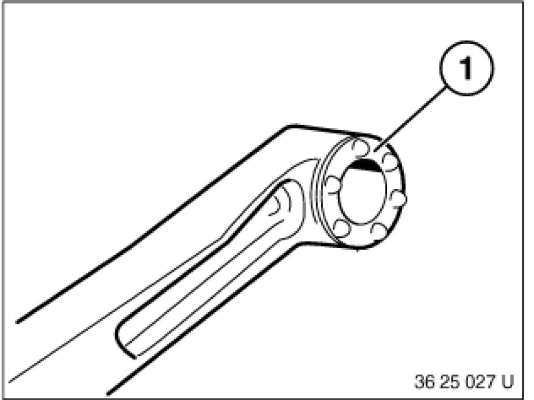

Replacing Bearing Bushes for Shift Arm
25 11 235 - Replacing bearing bushes for shift arm

Necessary preliminary tasks:
- Remove shift arm Replacing Shift Arm for Shift-Lever Mount.

Press out bearing bush (1).
Coat new bearing bush (1) with Circolight and then press into shift arm until side edges of bush protrude uniformly.
Circolight, refer to BMW Parts Service.